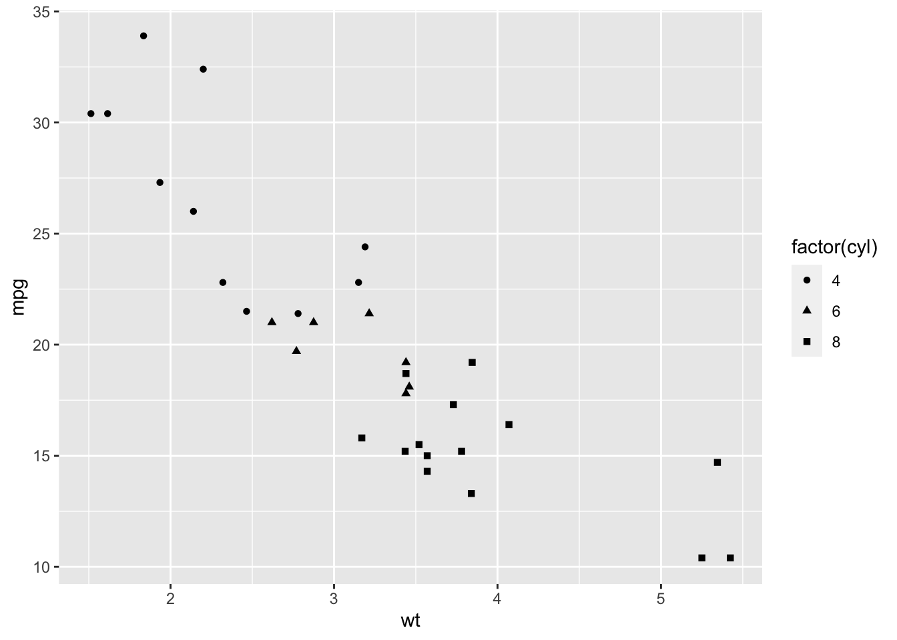
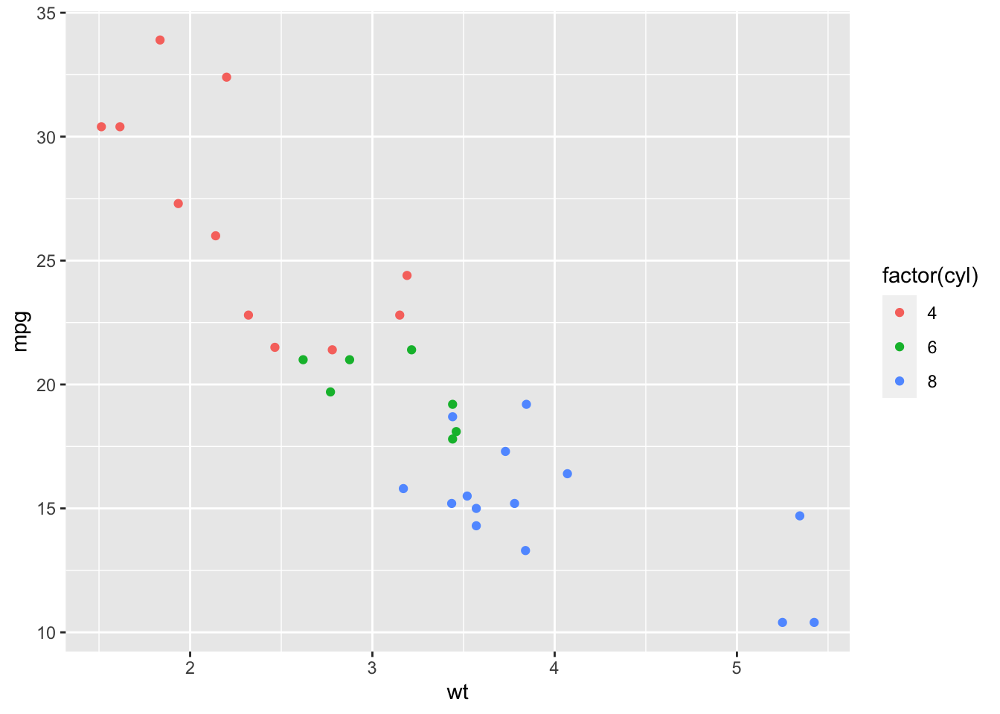

Last updated: 2020-06-11
Checks: 7 0
Knit directory: MSTPsummerstatistics/
This reproducible R Markdown analysis was created with workflowr (version 1.5.0). The Checks tab describes the reproducibility checks that were applied when the results were created. The Past versions tab lists the development history.
Great! Since the R Markdown file has been committed to the Git repository, you know the exact version of the code that produced these results.
Great job! The global environment was empty. Objects defined in the global environment can affect the analysis in your R Markdown file in unknown ways. For reproduciblity it’s best to always run the code in an empty environment.
The command set.seed(20180927) was run prior to running the code in the R Markdown file. Setting a seed ensures that any results that rely on randomness, e.g. subsampling or permutations, are reproducible.
Great job! Recording the operating system, R version, and package versions is critical for reproducibility.
Nice! There were no cached chunks for this analysis, so you can be confident that you successfully produced the results during this run.
Great job! Using relative paths to the files within your workflowr project makes it easier to run your code on other machines.
Great! You are using Git for version control. Tracking code development and connecting the code version to the results is critical for reproducibility. The version displayed above was the version of the Git repository at the time these results were generated.
Note that you need to be careful to ensure that all relevant files for the analysis have been committed to Git prior to generating the results (you can use wflow_publish or wflow_git_commit). workflowr only checks the R Markdown file, but you know if there are other scripts or data files that it depends on. Below is the status of the Git repository when the results were generated:
Ignored files:
Ignored: .DS_Store
Ignored: .RData
Ignored: .Rhistory
Ignored: .Rproj.user/
Ignored: analysis/.DS_Store
Ignored: analysis/.RData
Ignored: analysis/.Rhistory
Ignored: data/.DS_Store
Unstaged changes:
Modified: analysis/introR.Rmd
Note that any generated files, e.g. HTML, png, CSS, etc., are not included in this status report because it is ok for generated content to have uncommitted changes.
These are the previous versions of the R Markdown and HTML files. If you’ve configured a remote Git repository (see ?wflow_git_remote), click on the hyperlinks in the table below to view them.
| File | Version | Author | Date | Message |
|---|---|---|---|---|
| html | 9bb0ed6 | Anthony Hung | 2020-05-12 | Build site. |
| html | 2114e6c | Anthony Hung | 2020-05-10 | Build site. |
| html | 29c91df | Anthony Hung | 2020-05-10 | Build site. |
| html | a6d0787 | Anthony Hung | 2020-05-09 | Build site. |
| html | e18c369 | Anthony Hung | 2020-05-02 | Build site. |
| html | 0e6b6d0 | Anthony Hung | 2020-04-30 | Build site. |
| html | 5cbe42c | Anthony Hung | 2020-04-23 | Build site. |
| html | 4e08935 | Anthony Hung | 2020-03-30 | Build site. |
| Rmd | 058310e | Anthony Hung | 2020-03-30 | resampling lesson |
| html | 310d040 | Anthony Hung | 2020-02-20 | Build site. |
| Rmd | e02f5ce | Anthony Hung | 2020-02-20 | add dataviz |
| html | e02f5ce | Anthony Hung | 2020-02-20 | add dataviz |
library(ggplot2)
cars <- mtcars
?mtcarsThese data contain 32 observations on cars across 11 different variables. Some of these variables (e.g. mpg) are numeric, while others (e.g. cyl) are factors. Notice that these data are in “tidy” format, meaning that:
Each variable forms a column.
Each observation forms a row.
Each type of observational unit forms a table.
dim(cars)[1] 32 11head(cars) mpg cyl disp hp drat wt qsec vs am gear carb
Mazda RX4 21.0 6 160 110 3.90 2.620 16.46 0 1 4 4
Mazda RX4 Wag 21.0 6 160 110 3.90 2.875 17.02 0 1 4 4
Datsun 710 22.8 4 108 93 3.85 2.320 18.61 1 1 4 1
Hornet 4 Drive 21.4 6 258 110 3.08 3.215 19.44 1 0 3 1
Hornet Sportabout 18.7 8 360 175 3.15 3.440 17.02 0 0 3 2
Valiant 18.1 6 225 105 2.76 3.460 20.22 1 0 3 1Let’s examine the relationship between two variables, mpg and wt:
ggplot(data = cars) + #data layer
geom_point(aes(x = wt, y = mpg)) #geom layer, aesthetics layer
Now let’s color by cylinder number. What is important to take into account for the cylinder variable?
ggplot(data = cars) + #data layer
geom_point(aes(x = wt, y = mpg, color = cyl)) #geom layer, aesthetics layer
ggplot(data = cars) + #data layer
geom_point(aes(x = wt, y = mpg, size = factor(cyl))) #geom layer, aesthetics layer, colorWarning: Using size for a discrete variable is not advised.
ggplot(data = cars) + #data layer
geom_point(aes(x = wt, y = mpg, shape = factor(cyl))) #geom layer, aesthetics layer, color
ggplot(data = cars) + #data layer
geom_point(aes(x = wt, y = mpg, color = factor(cyl))) #geom layer, aesthetics layer, color
What if we’re interested in the same plot as above, but separated by automatic vs manual transmissions?
ggplot(data = cars) + #data layer
geom_point(aes(x = wt, y = mpg, color = factor(cyl))) + #geom layer, aesthetics layer, color
facet_wrap(~factor(am)) #facet
#rename factor labels
cars$am <- as.factor(cars$am)
levels(cars$am) <- c("automatic", "manual")
ggplot(data = cars) + #data layer
geom_point(aes(x = wt, y = mpg, color = factor(cyl))) + #geom layer, aesthetics layer, color
facet_wrap(~am) #facet
cars$vs <- as.factor(cars$vs)
levels(cars$vs) <- c("V-shaped engine", "straight engine")
ggplot(data = cars) + #data layer
geom_point(aes(x = wt, y = mpg, color = factor(cyl))) + #geom layer, aesthetics layer, color
facet_grid(vs~am) #facet
ggplot(data = cars) + #data layer
geom_point(aes(x = wt, y = mpg, color = factor(cyl), size = disp, shape = factor(gear))) + #geom layer, aesthetics layer, color
facet_grid(vs~am)
labeled_plot <- ggplot(data = cars) + #data layer
geom_point(aes(x = wt, y = mpg, color = factor(cyl))) + #geom layer, aesthetics layer, color
ggtitle("Relationship between mpg and weight \n in mtcars") +
xlab("weight (1000 lbs)") +
ylab("miles per gallon (mpg)") +
labs(color = "Cylinder type")
labeled_plot
cylinder_colors <- c("#035AA6", "#F2AE2E", "#F23D3D")
labeled_plot +
scale_color_manual(values=cylinder_colors)
cars$cyl <- factor(cars$cyl)
cars$cyl <- factor(cars$cyl, levels(cars$cyl)[c(3,2,1)])
ggplot(data = cars) + #data layer
geom_point(aes(x = wt, y = mpg, color = cyl)) + #geom layer, aesthetics layer, color
ggtitle("Relationship between mpg and weight \n in mtcars") +
xlab("weight (1000 lbs)") +
ylab("miles per gallon (mpg)") +
labs(color = "Cylinder type") +
scale_color_manual(values=cylinder_colors)
Remember, we are working with the grammar of graphics so we can add as many geoms as we want/need to our plot!
labeled_plot +
geom_smooth(aes(x = wt, y = mpg, color = factor(cyl)), method = "lm", se = FALSE) #additional geoms inherit data and aesthetics from the predefined plot`geom_smooth()` using formula 'y ~ x'
#we can also define a new dataset for an additional geom
library(dplyr)
Attaching package: 'dplyr'The following objects are masked from 'package:stats':
filter, lagThe following objects are masked from 'package:base':
intersect, setdiff, setequal, unionmeans <- cars %>%
group_by(cyl) %>%
summarise(mean.wt = mean(wt), mean.mpg = mean(mpg))
means# A tibble: 3 x 3
cyl mean.wt mean.mpg
<fct> <dbl> <dbl>
1 8 4.00 15.1
2 6 3.12 19.7
3 4 2.29 26.7labeled_plot +
geom_point(data = means, aes(x = mean.wt, y = mean.mpg, color = cyl), size = 10, alpha = 0.5) +
scale_color_manual(values=c(cylinder_colors))
library(ggthemes)
labeled_plot +
theme_fivethirtyeight()
avocado_data <- read.csv('data/avocado.csv')
head(avocado_data) X Date AveragePrice Total.Volume X4046 X4225 X4770 Total.Bags
1 0 2015-12-27 1.33 64236.62 1036.74 54454.85 48.16 8696.87
2 1 2015-12-20 1.35 54876.98 674.28 44638.81 58.33 9505.56
3 2 2015-12-13 0.93 118220.22 794.70 109149.67 130.50 8145.35
4 3 2015-12-06 1.08 78992.15 1132.00 71976.41 72.58 5811.16
5 4 2015-11-29 1.28 51039.60 941.48 43838.39 75.78 6183.95
6 5 2015-11-22 1.26 55979.78 1184.27 48067.99 43.61 6683.91
Small.Bags Large.Bags XLarge.Bags type year region
1 8603.62 93.25 0 conventional 2015 Albany
2 9408.07 97.49 0 conventional 2015 Albany
3 8042.21 103.14 0 conventional 2015 Albany
4 5677.40 133.76 0 conventional 2015 Albany
5 5986.26 197.69 0 conventional 2015 Albany
6 6556.47 127.44 0 conventional 2015 Albanydim(avocado_data)[1] 18249 14The above code chunk loads the avocado dataset, which contains data on avocado prices in different US regions between 2015-2018. Desriptions of what each of the columns mean can be found here: https://www.kaggle.com/neuromusic/avocado-prices.
Pick and create out a visualization that compares the number of Total bags, small bags, large bags, and extra large bags sold each year in each region.
Your choice! Pick any number of columns/entries you are interested in and create a visualization that says something interesting about the data.
sessionInfo()R version 3.6.3 (2020-02-29)
Platform: x86_64-apple-darwin15.6.0 (64-bit)
Running under: macOS Catalina 10.15.5
Matrix products: default
BLAS: /Library/Frameworks/R.framework/Versions/3.6/Resources/lib/libRblas.0.dylib
LAPACK: /Library/Frameworks/R.framework/Versions/3.6/Resources/lib/libRlapack.dylib
locale:
[1] en_US.UTF-8/en_US.UTF-8/en_US.UTF-8/C/en_US.UTF-8/en_US.UTF-8
attached base packages:
[1] stats graphics grDevices utils datasets methods base
other attached packages:
[1] ggthemes_4.2.0 dplyr_0.8.5 ggplot2_3.3.0 workflowr_1.5.0
loaded via a namespace (and not attached):
[1] Rcpp_1.0.4.6 compiler_3.6.3 pillar_1.4.3 later_1.0.0
[5] git2r_0.26.1 tools_3.6.3 digest_0.6.25 lattice_0.20-38
[9] nlme_3.1-144 evaluate_0.14 lifecycle_0.2.0 tibble_3.0.1
[13] gtable_0.3.0 mgcv_1.8-31 pkgconfig_2.0.3 rlang_0.4.5
[17] Matrix_1.2-18 cli_2.0.2 yaml_2.2.1 xfun_0.12
[21] withr_2.1.2 stringr_1.4.0 knitr_1.26 fs_1.3.1
[25] vctrs_0.2.4 rprojroot_1.3-2 grid_3.6.3 tidyselect_1.0.0
[29] glue_1.4.0 R6_2.4.1 fansi_0.4.1 rmarkdown_1.18
[33] farver_2.0.3 purrr_0.3.4 magrittr_1.5 whisker_0.4
[37] splines_3.6.3 backports_1.1.6 scales_1.1.0 promises_1.1.0
[41] htmltools_0.4.0 ellipsis_0.3.0 assertthat_0.2.1 colorspace_1.4-1
[45] httpuv_1.5.2 labeling_0.3 utf8_1.1.4 stringi_1.4.5
[49] munsell_0.5.0 crayon_1.3.4